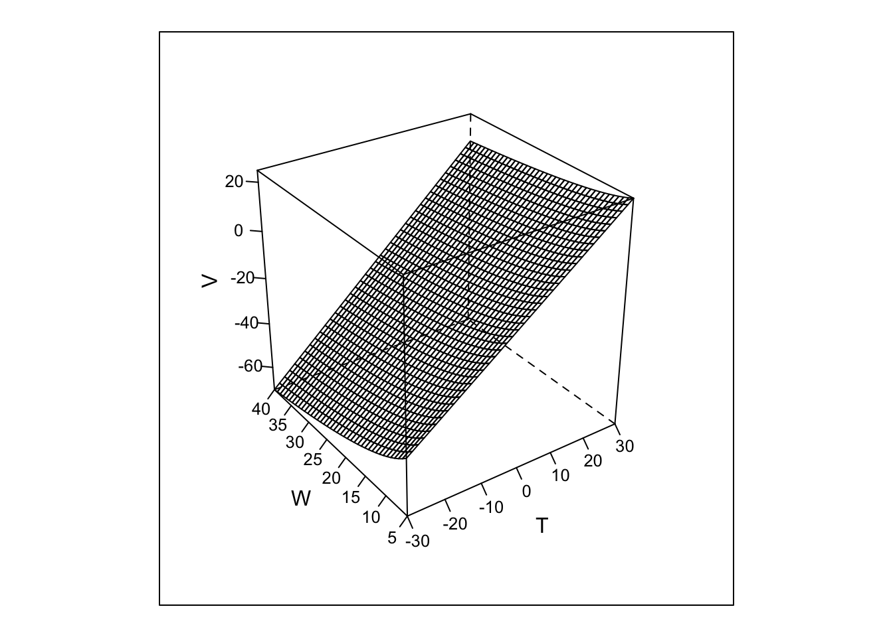
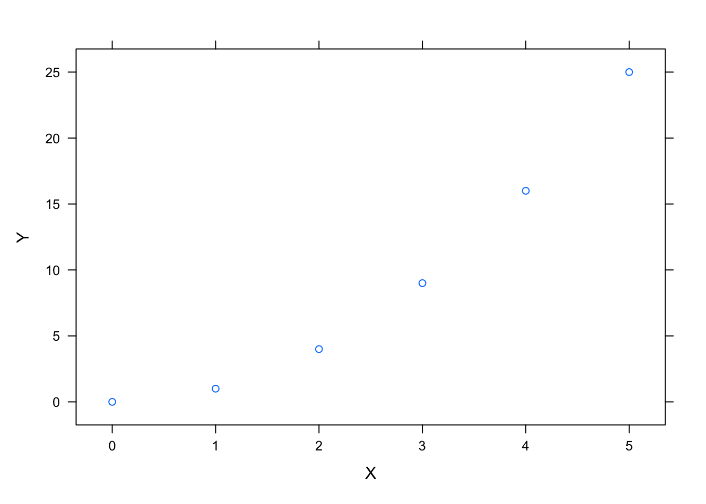
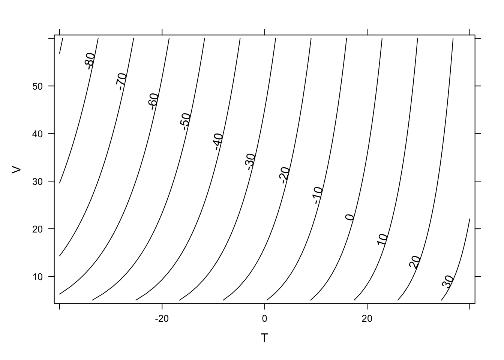
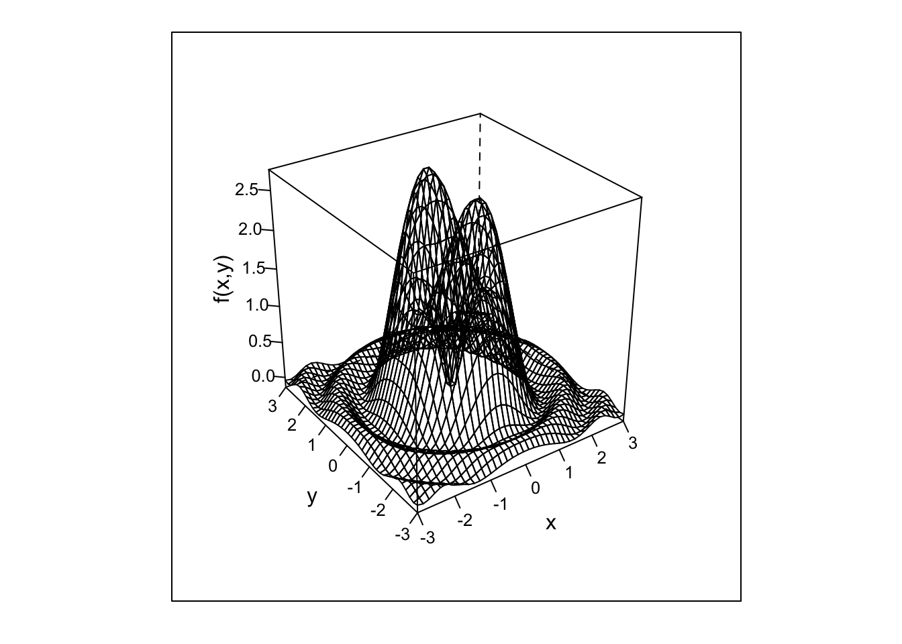
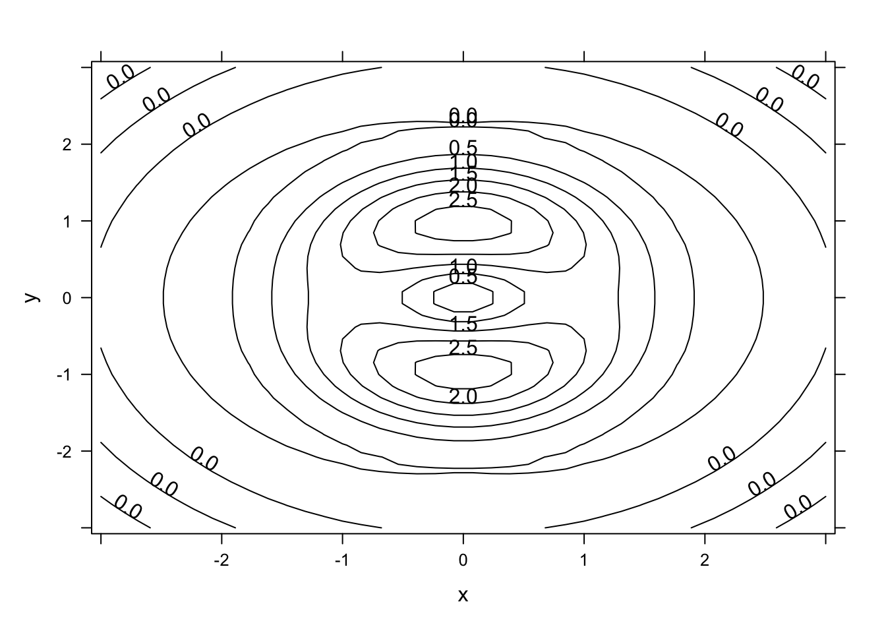
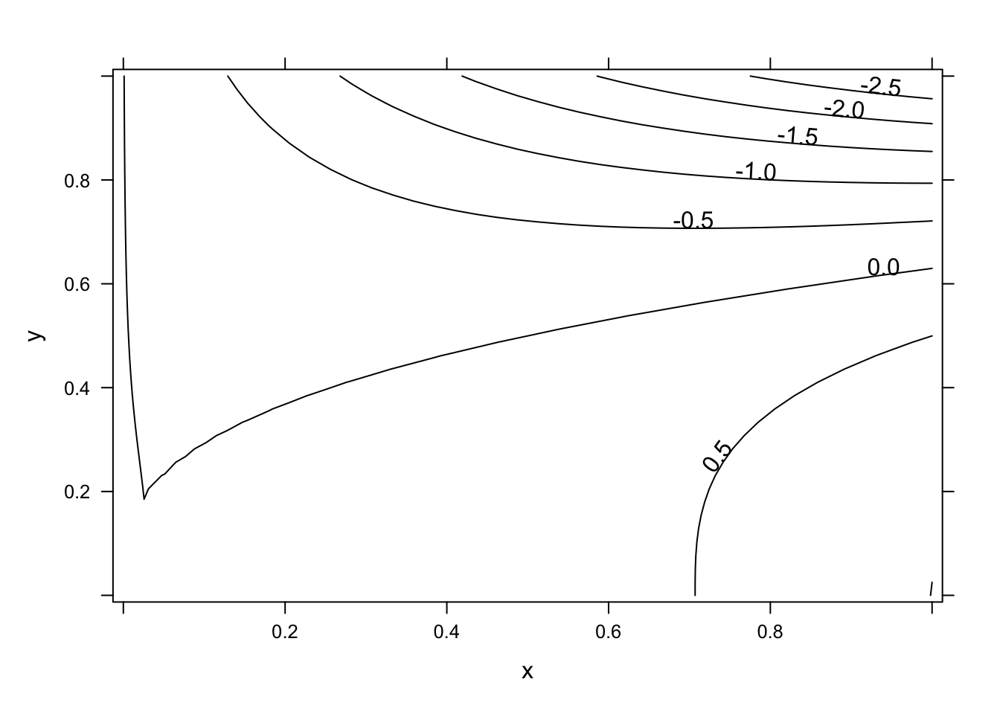
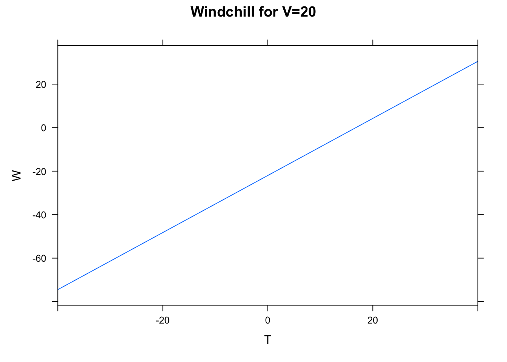

10 Multivariable Functions
10.1 Goals
- Identify and explain independent and dependent variables in multivariable functions
- Interpret functions represented as tables and equations
- Interpret contour diagrams and make function value estimates
- Interpret cross sections and connect them with contour diagrams
- Use RStudio to create a contour plot and a surface plot of a function \(z=f(x,y)\).
10.2 Activities

10.2.2 Plotting in RStudio
Create these plots using RStudio.
You will need to import the mosaic package. Cut and paste this code chunk into your RMD file and run it. This will load in the plotFun command to create surface plots and contour plots.
```{r setup, include=FALSE, warning=FALSE}
knitr::opts_chunk$set(echo = TRUE)
suppressPackageStartupMessages(library(mosaic))
```- Windchill Function
\[ W(T,V) = 35.74+0.6215 \, T-35.75 \, V^{0.16}+0.4275 \, T \, V^{0.16} \]
Surface plot
W = makeFun(35.74+0.6215*T-35.75*V^(0.16)+0.4275*T*V^(0.16) ~ T & V)
plotFun(W(T,V)~T & V,
T.lim=range(-30,30),
V.lim=range(5,40),
surface=TRUE,
zlab="W",
xlab="T",
ylab="V")
Contour Plot
plotFun(W(T,V) ~ T & V,
T.lim=range(-40,40),
filled=FALSE,
V.lim=range(5,60),
zlab="V",
xlab="T",
ylab="V",
levels = seq(-100,40,10))
- Another Function
\[ f(x,y) = \frac{\sin(x^2+y^2)}{0.1+x^2+y^2}+ \frac{1}{2}(x^2+4y^2)e^{1-x^2-y^2} \] Surface Plot
f = makeFun(sin(x^2+y^2)/(0.1+x^2+y^2)+(x^2+4*y^2)*exp(1-x^2-y^2)/2~ x & y)
plotFun(f(x,y) ~ x & y,
surface=TRUE,
zlab="f(x,y)",
x.lim=range(-3,3),
y.lim=range(-3,3))
Contour Plot
plotFun(f(x,y)~ x & y,
filled=FALSE,
zlab="f(x,y)",
x.lim=range(-3,3),
y.lim=range(-3,3))
10.2.3 Cross Sections
For each of the the two functions in the previous problem:
- Sketch two or three horizontal cross sections
- Sketch two or three vertical cross sections
- Then use RStudio to create these cross sections and compare to your sketches. How well did you do?
10.2.4 Plotting in RStudio
Here is some sample RStudio code that defines a function P(x,y) = x^2 - 4x y^3 and then creates two contour plots. The first plot uses the default domain and default level curves (chosen by RStudio). The second plot specifies both of these using additional arguments.
P = makeFun(x^2 - 4*x*y^3 ~ x&y)
plotFun(P(x,y) ~ x&y, filled=FALSE)
plotFun(P(x,y) ~ x&y,
filled=FALSE,
x.lim=range(-5,5),
y.lim=range(-5,5),
levels = seq(-1000, 1000, 200))
Using RStudio,
- Use
makeFunto create each of these functions. - Then use
plotFunto create a contour plot.
Try out different horizontal and vertical domains that are centered around the origin. Change the level curves.
- \(f(x,y) = \sin(\sqrt{x^2+y^2})\)
- \(g(x,y) = 100 x^2 y^2 e^{-x^2-y^2}\)
- \(h(x,y) = \sin^2x + \frac{1}{4}y^2\)
10.3 Solutions
10.3.3 Cross Sections
- Here are some cross sections for the windchill function \[W(T,V) = 35.74+0.6215 \, T-35.75 \, V^{0.16}+0.4275 \, T \, V^{0.16}\]
W = makeFun(35.74+0.6215*T-35.75*V^(0.16)+0.4275*T*V^(0.16)~T & V)
plotFun(W(T,20) ~ T,
T.lim = range(-40,40),
xlab = "T",
ylab = "W",
main = "Windchill for V=20",
levels = seq(-100,40,10))
plotFun(W(T,40) ~ T,
T.lim = range(-40,40),
xlab = "T",
ylab = "W",
main = "Windchill for V=40",
levels = seq(-100,40,10))
plotFun(W(-20,V) ~ V,
V.lim=range(0,60),
xlab="V",
ylab="W",
main="Windchill for T=-20")
plotFun(W(20,V) ~ V,
V.lim=range(0,60),
xlab="V",
ylab="W",
main="Windchill for T=20")
- Here are some cross sections for the second function. \[ f(x,y) = \frac{\sin(x^2+y^2)}{0.1+x^2+y^2}+ \frac{1}{2}(x^2+4y^2)e^{1-x^2-y^2} \]
f = makeFun(sin(x^2 + y^2)/(0.1 + x^2 + y^2) + (x^2 + 4*y^2) * exp(1 - x^ 2- y^2)/2 ~ x & y)plotFun(f(x,-1.5) ~ x, x.lim=range(-1,1))
plotFun(f(x,0) ~ x, x.lim=range(-1,1))
plotFun(f(x,1.5) ~ x, x.lim=range(-1,1))
plotFun(f(-1.5,y) ~ y, y.lim=range(-1,1))
plotFun(f(0,y) ~ y, y.lim=range(-1,1))
plotFun(f(1.5,y) ~ y, y.lim=range(-1,1))
10.3.4 Plotting in RStudio
- \(f(x,y) = \sin(\sqrt{x^2+y^2})\)
f = makeFun(sin( sqrt((x^2+y^2))) ~ x&y)
plotFun(f(x,y) ~ x & y,
filled=FALSE,
x.lim=range(-3,3),
y.lim=range(-3,3),
levels = seq(0, 1, 0.25))
- \(g(x,y) = x^2 y^2 e^{-x^2-y^2}\)
g = makeFun(100 * x^2 * y^2 * exp(-x^2-y^2)~ x&y)
plotFun(g(x,y) ~ x & y,
filled=FALSE,
x.lim=range(-2,2),
y.lim=range(-2,2),
levels=seq(0,15,3))
- \(h(x,y) = \sin^2x + \frac{1}{4}y^2\)
g = makeFun((sin(x))^2 + y^2/4 ~ x&y)
plotFun(g(x,y) ~ x & y,
filled=FALSE,
x.lim=range(-5,5),
y.lim=range(-3,3),
levels=seq(0,4,0.5))